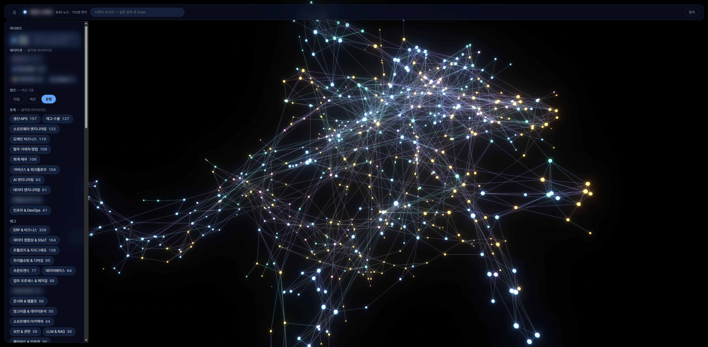

PROJECT 04 · OSS & PERSONAL R&D
AI 엔지니어링 — OSS · 개인 R&D
무엇
ERP 개발에 쓴 AI 에이전트 작업 규율을 관측 도구 harness-scope로 공개(OSS)하고, 같은 축(라우팅·관측·장기기억)을 LLM 게이트웨이·개인 지식그래프(PKG) 연구로 확장.
왜
AI와 일하는 방식 자체를 도구와 지표로 만들어야 재현·검증 가능한 자산이 됩니다 — 말이 아니라 설치해서 확인할 수 있는 형태로.
결과
LLM 관측 분야 Phoenix 개발사 Arize의 오픈소스에 패치 제출 → 본선 병합 · pip/npm 패키지 배포 · PKG 검색 품질 Recall@5 0.921 회귀 게이트.
본선 패치 채택
Arize 병합
패키지 배포
pip · npm
PKG 검색 품질
R@5 0.921

1
harness-scope — 오픈소스
ERP 개발에 사용한 AI 에이전트 작업 규율을 관측 도구로 만들어 Apache-2.0으로 공개했습니다 — 세션 로그를 선언적 룰(R1~R13)로 턴 단위 판정하고, Session Replay·Rule Health·토큰 손실 뷰어와 MCP 서버(10툴)를 제공합니다. 이 도구가 탐지한 토큰 이중계산 버그를 LLM 관측 분야 Phoenix 개발사 Arize의 오픈소스에서 재현·수정해 제출했고, 메인테이너가 패치를 그대로 채택해 메인 브랜치에 병합했습니다.
2
개인 R&D — LLM 게이트웨이 · PKG 2026.07~
LLM 게이트웨이 — 여러 LLM 프로바이더를 단일 계층에서 라우팅하는 LiteLLM 게이트웨이 + Phoenix(OTLP) 관측을 자가 인프라에 직접 배포. 스코프 가상키·예산 캡·모델 티어별 비용 롤업까지, 모든 LLM 호출이 한 곳에서 계측·통제되는 LLMOps 백본입니다.
개인 지식그래프(PKG) — 645노드·781 typed 엣지 개념그래프에 렉시컬+시멘틱(pgvector) 하이브리드 검색(검색 자체는 LLM 0콜), LangGraph 기반 RAG와 MCP 서버로 에이전트에 노출. 회귀 평가 하네스(Recall@5 0.921)로 검색 품질을 게이트합니다.

hub
두 프로젝트의 아키텍처·설계 방법론은 하나의 공개 저장소로 정리했습니다(구조도·핵심 코드 발췌·데모 — 실코드·개인 데이터는 비공개):
github.com/moongioh/agent-memory-llmops
3
더 보기
홈 · 이력서 · 시스템 오버뷰 · GitHub repo · awsgioh@gmail.com